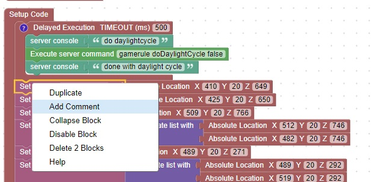

<h1>Add Comments</h1>
Comments can be added to any code block, by selected the block and pressing the right mouse button<br>
<br>
These are good for understanding the code, and also end up in the python<br>
<hr>
<center></center>